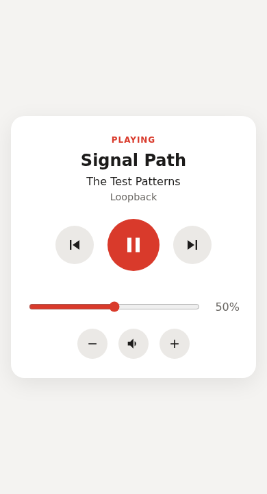

Como funciona
1. Instale no PC do Windows
Onde a música toca. A instalação leva menos de um minuto.
2. Escaneie o QR Code
Com o celular, para parear com o PC em segundos.
3. Controle de qualquer lugar
Da casa, direto pelo navegador — sem precisar chegar perto do PC.
Recursos
Play/pause e pular faixas
Os controles essenciais, sempre à mão.
Controle de volume e mudo
Ajuste fino sem precisar levantar do sofá.
Mostra a faixa atual
Veja o que está tocando em tempo real.
Celular, navegador e CLI
Funciona no navegador de qualquer aparelho ou pelo terminal.
Segurança
Funciona apenas na sua rede local (o servidor não é exposto para a internet) e todos os comandos exigem um token de acesso obtido no pareamento por QR Code.